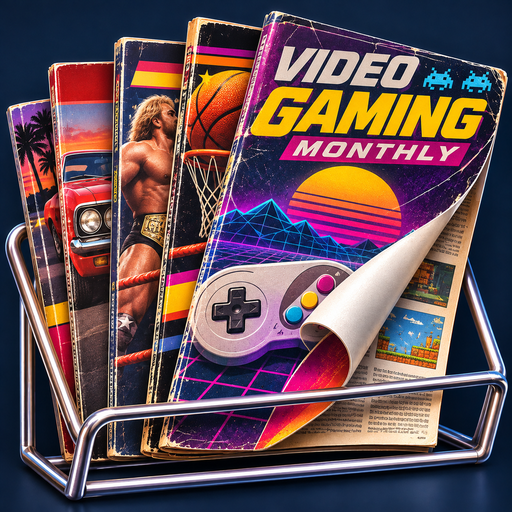

For iPhone, iPad and the iPhone Duo
RackFlip
Your magazine rack, from Komga. Old issues, real paper feel: pages that curl under your thumb, spreads that open across the fold, and a newsstand that remembers where you left off.
Coming to the App Store.